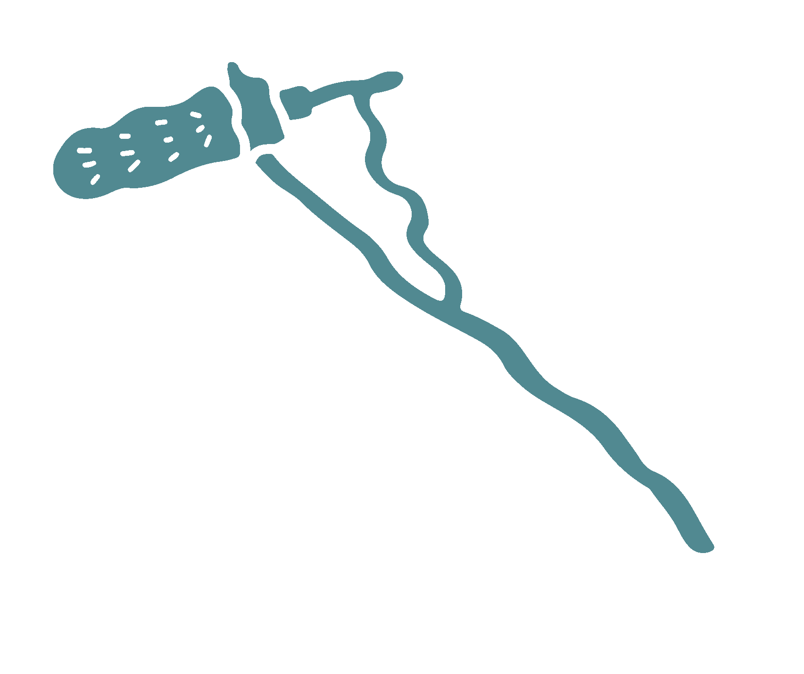

Documental
"Tierra Agria. Un corto-documental de Xipil"

Este documental tiene como objetivo capturar en video las historias y testimonios de los habitantes, junto con imágenes y que ayuden a representar sus memorias y así visibilizar su lucha ante una audiencia más amplia.